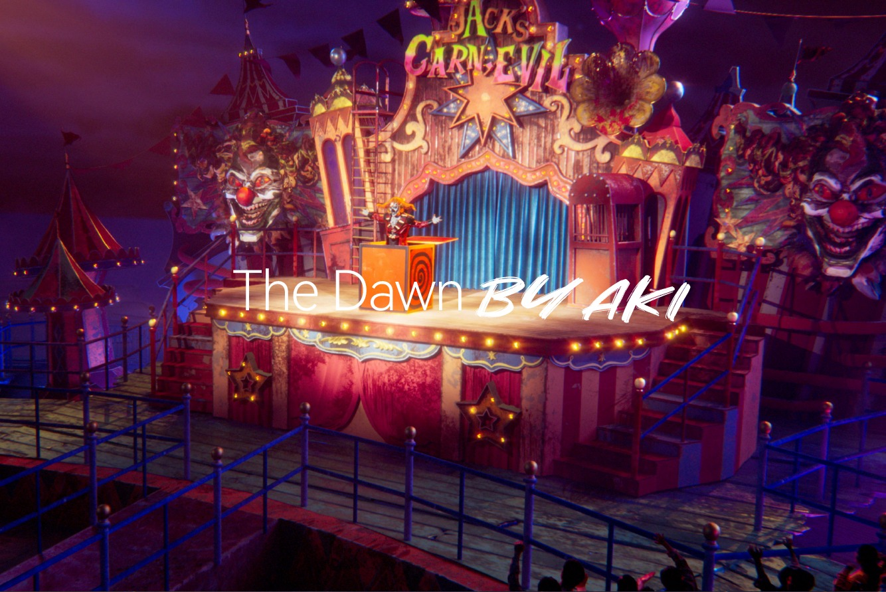
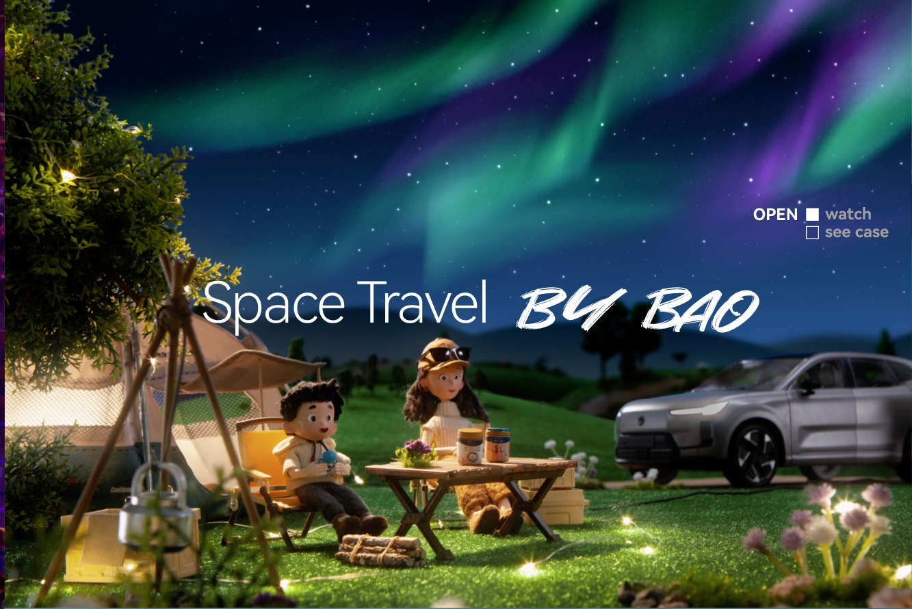
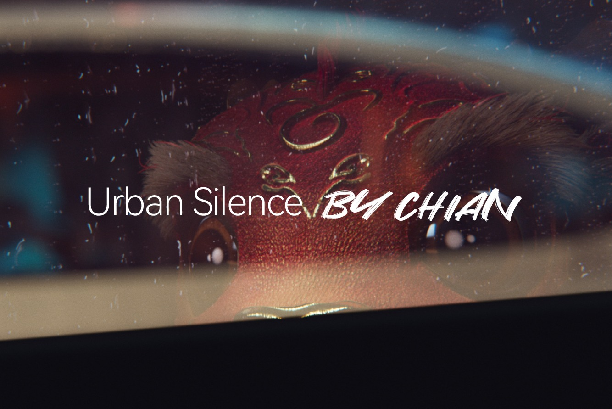
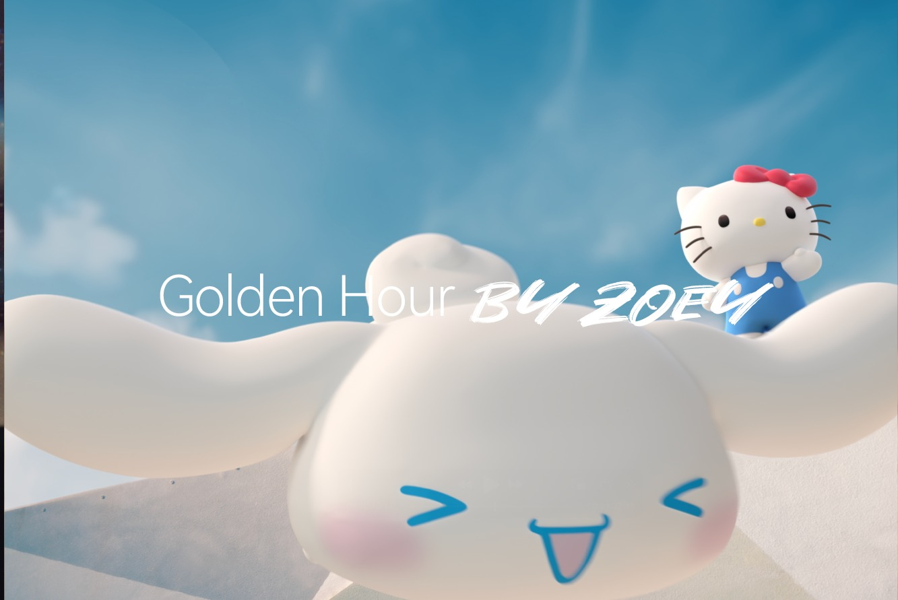
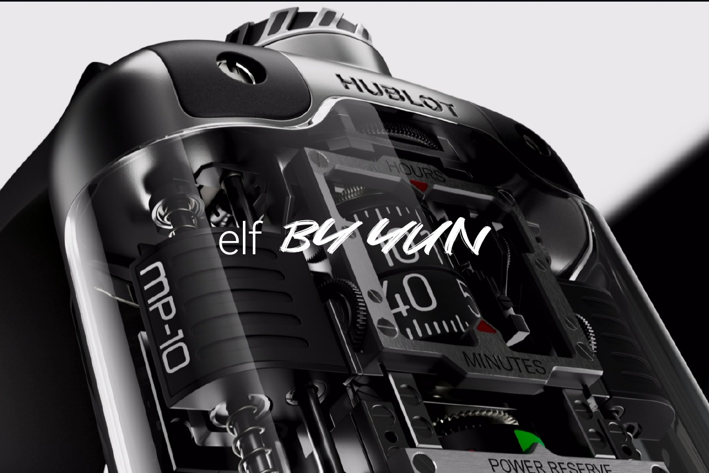

The Dawn BY AKI OPEN watchsee case

Space Travel BY BAO OPEN watchsee case

Urban Silence BY CHIAN OPEN watchsee case

Golden Hour BY ZOEC OPEN watchsee case

elf BY GUIN OPEN watchsee case
 AUDI BY ZACK
OPEN watch
AUDI BY ZACK
OPEN watchsee case